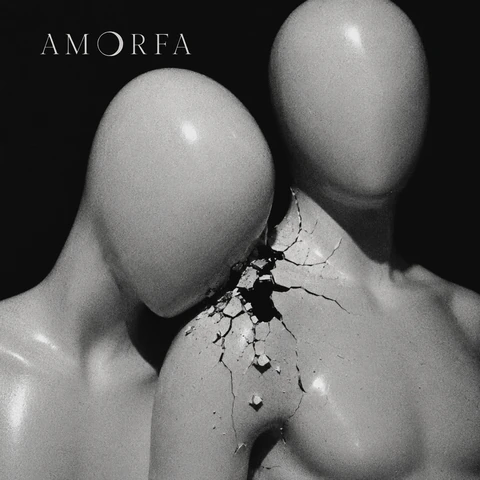
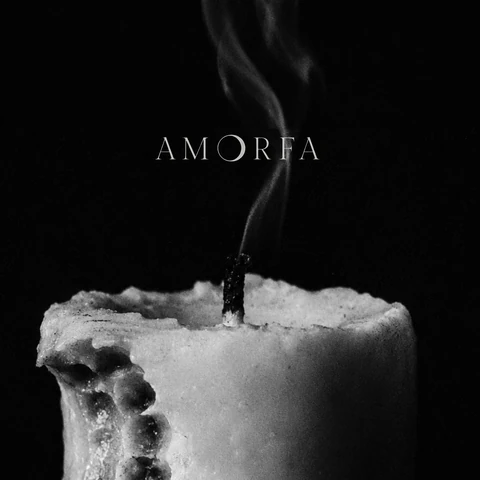
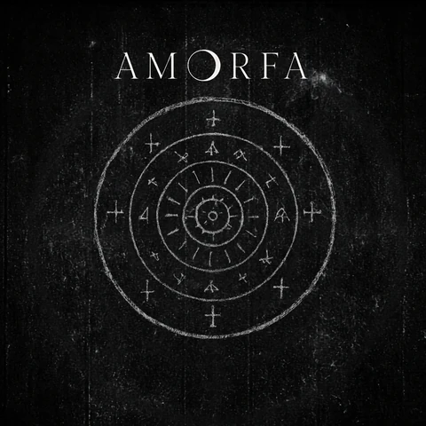
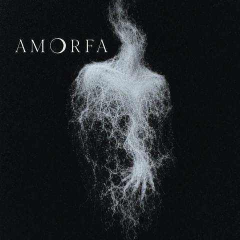
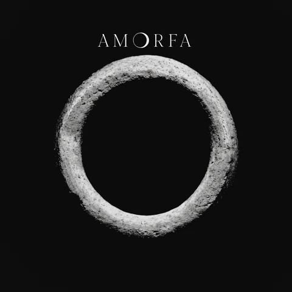
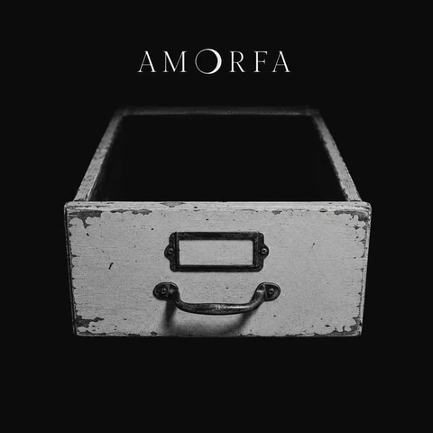

arquivo oficial
Discografia
Álbuns, EPs e ciclos oficiais da AMORFA.
Álbuns oficiais
Antologia AMORFA
A Antologia atravessa seis estados da forma: superfície, contato, devoção, dissolução, submundo e arquivo final.

II — Contato
Pequenos Incêndios sob o Ar-Condicionado no Máximo
O corpo queima sob contenção fria.
disponível

III — Devoção
Teologia dos Fracassos Afetivos em Cama de Solteiro
A ausência vira religião doméstica.
em breve



VI — Arquivo final
Epílogo: Onde Se Guarda o Que Não Existe Mais
O que não voltou inteiro encontra uma forma de permanecer.
em breve
EPs
Ciclos paralelos
Recortes, transmissões e campanhas específicas fora da sequência principal da Antologia.
Singles
Nenhum single isolado publicado no momento. O arquivo principal da AMORFA está organizado em álbuns e ciclos.